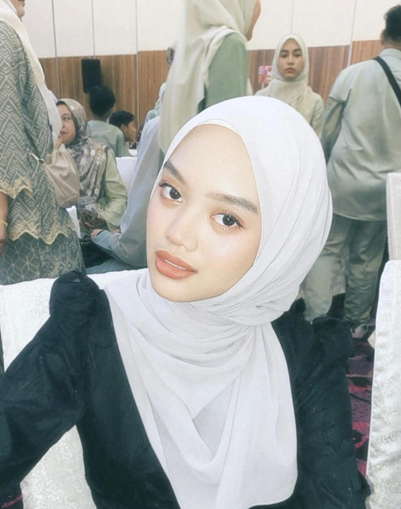

Experience
My experience is I have done my internship at Felda Investment Corporation for 2 months and I was assigned for Information Technology department.

I love listening to music during my free time.
My experience is I have done my internship at Felda Investment Corporation for 2 months and I was assigned for Information Technology department.
Welcome! This page is specifically where I share about my family members.
The person in the picture is my father, Hazizi Bin Hassan, who was born in 1966 at Kampar, Perak.
The person in the picture is my mother, Najlah Binti Abdul Wahab, who was born in 1966 at Sungkai, Perak.
My first sister, Nurul Asyiqin Binti Hazizi, was born in 1994 in Kuala Lumpur. She works in a government company at Putrajaya.
My brother-in-law, Faris Safuan and was born in 1994. He is my sister's husband and the father of my beautiful and cute niece.
My second sister, Nur Alia Aily Binti Hazizi, was born in 1996 in Kuala Lumpur. She currently works at Wangsa Maju Military Cooperative.
My third sister, Nur Ain Natasha Binti Hazizi, was born in 2001 in Kuala Lumpur. She works at Koperasi Felda Sdn. Bhd. and is pursuing a degree part-time at UiTM Puncak Perdana.
This is me, Nur Aisyah Sofia Binti Hazizi, born in 2004 in Kuala Lumpur. I am the youngest of four siblings and a Diploma student in Information Management at UiTM Rembau.
My niece, Airis Farisha Binti Faris Safuan, was born in 2021 in Putrajaya. She is the first grandchild of my parents and is now 3 years old.
Welcome! This page is specifically where I tell about my education from kindergarten to university.
When I was 3 years old, my parents sent me to Semai Bakti Felda Kindergarten, which operates at Anjung Felda, Kuala Lumpur. I studied there from 2007 to 2010.
When I entered the 1st grade, I was admitted to Sekolah Kebangsaan Jalan Gurney 1 in Kampung Datuk Keramat, Kuala Lumpur. I studied there for 6 years, from 2011 to 2016.
When I entered the 1st grade, apart from the national school, I was also admitted to Sekolah Rendah Agama Al-Alusi in Kampung Datuk Keramat, Kuala Lumpur. I studied there for 6 years, from 2011 to 2016.
After I finished primary school, I was registered to continue at Sekolah Menengah Kebangsaan Puteri Ampang in Ampang, Kampung Datok Keramat, Kuala Lumpur. I attended this school from 2017 until 2022.
Welcome! This is my personal space where I describe my favorite things.
Well my favorite singer before this was Ailee from Korea but now I really love Lyodra from Indonesia .
My favorite food is spicy, and I choose Ayam Gepuk Pak Gembus as my favorite dish.
My favorite drink since childhood is ice chocolate. It's my go-to drink!
I don't have any pets at home, but I really like cats. I also often take photos of street cats as memories.
My favorite colour is pink, because the colour is very cute for me.
My favorite flower is pink rose, because the pink roses represent sweetness, femininity, appreciation, and admiration.
Social Media
Follow me on: